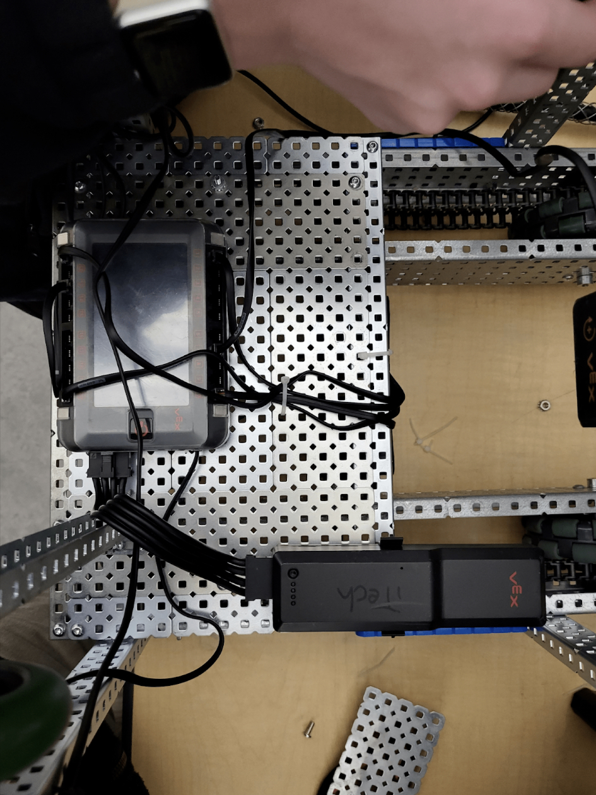
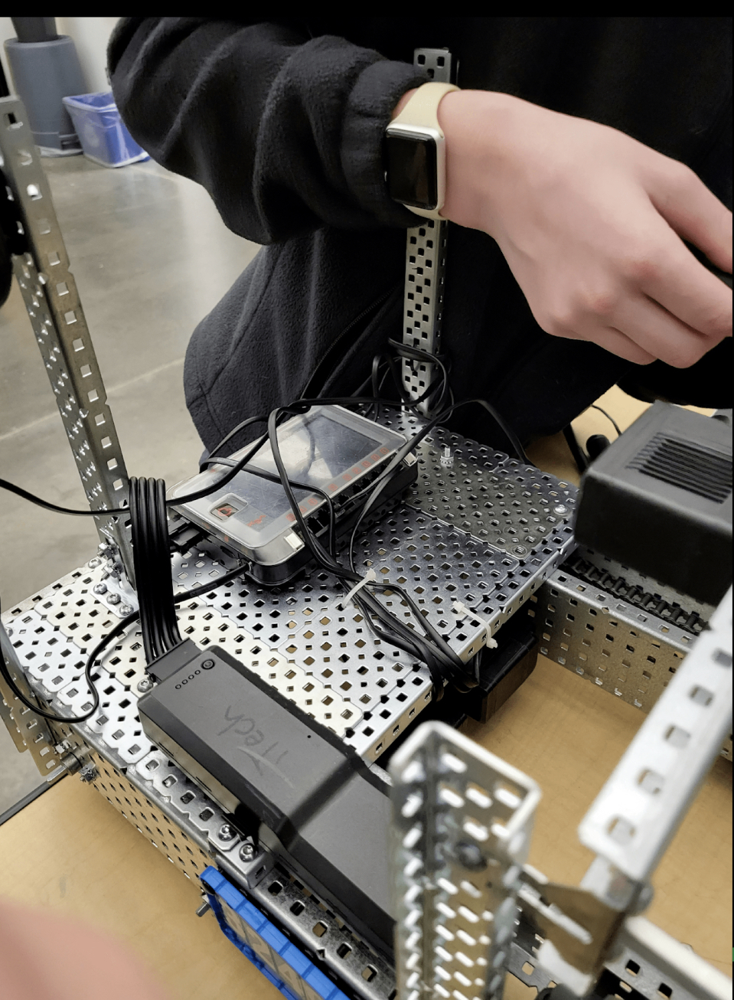
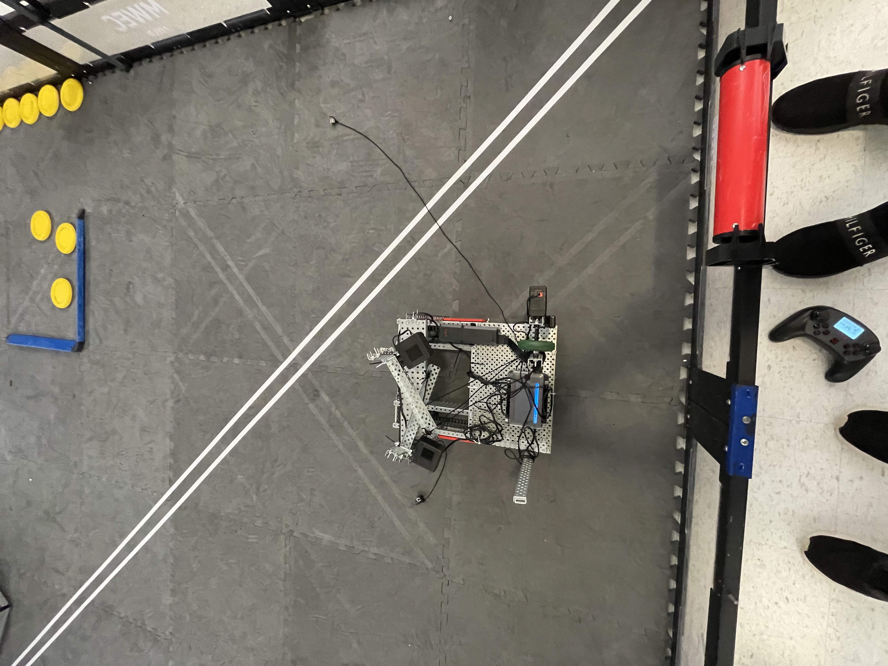

3249D is mainly built on 3 core members, Van Metz ( Was Controller, got injured first match so is now team leader ). Benjamin Johnson is the main coder and subbed for Van. Zeyen Jorgensen is the main builder along with Caiden Conboy and Malachi Haynes. Caiden Conboy was a builder but he was playing games and was asked to leave. Malachi Haynes was a great addition to our team, however he got less intrested in robotics as a whole and decided it was best to leave.
Our Robot (unofficialy named The Dissapointed ( see Fun Facts For more on this reasoning) ) it was meant to intake from the front and shoot from the back but we had some problems with the team before we can do anything in time. so our bot was a puch but with a 4 motor drivetrain and uses 20% battery per use. letting us test our bot in between our qualification rounds while fitting in the 3 batteries we where given. we also have a couple iterations of our expansions, for starters we thought of a centerfugal force expansion that while the thing spins up, the sting launches outward, this however, did not work and couldnt stay inside the center long enough to actually get intertia. then we binged on youtube for long enough my youtube recommnended wasnt the same ever agian. we found a catapult system that launches a weight tied with string onto the feild. this worked but we couldnt find a way to hold the rubber bands in time for our last tourney at mollala high. so we attached a high speed motor to the axle that held the carrage of the catapult and it worked for like a tile or two ahead, i later after 3249D time was up, made a system that kept the wieght in the carrage and let it launch far, far as in the entire feild.
Our Team was Originally supposed to be called The Dissapointments as a reffrence to this year being our first year in vex. sadly it was turned down in the spirit of the game.
Click to our Journal!   